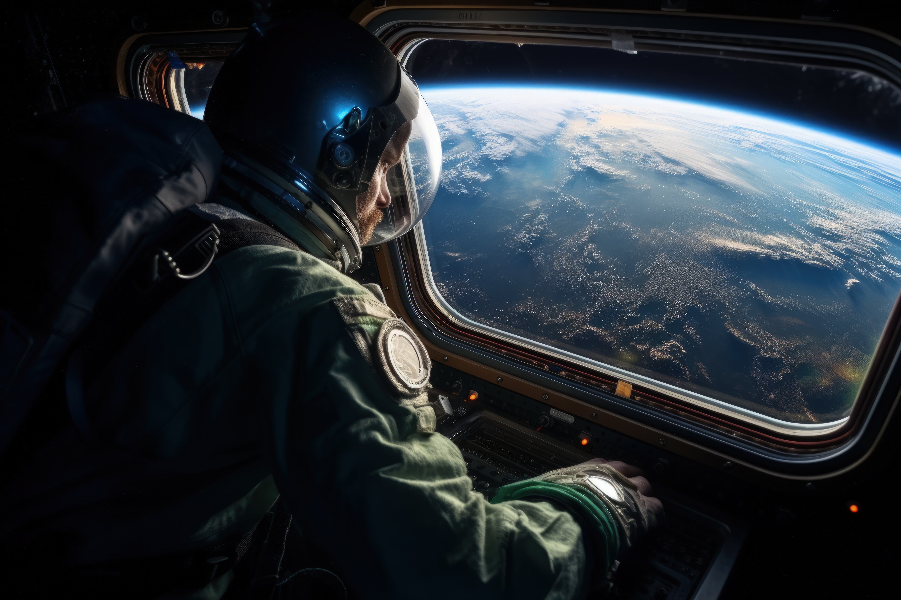

<style>
    .hashtags {
        text-align: center;
        max-width: 800px;
        margin: 20px auto;
        padding: 10px;
    }

    .hashtags a {
        display: inline-block;
        margin: 5px;
        padding: 8px 12px;
        font-size: 0.9rem;
        font-weight: bold;
        text-decoration: none;
        color: #fff;
        background-color: #264653;
        border-radius: 20px;
        transition: background 0.3s ease;
    }

    .hashtags a:hover {
        background-color: #001f3f;
    }

    body {
        font-family: Arial, sans-serif;
        margin: 0;
        padding: 0;
        background-color: #f5f5f5;
        color: #333;
    }

    h2 {
        font-family: "Arial", sans-serif;
        font-size: 2.5rem;
        font-weight: bold;
        color: #001f3f;
        margin-top: 20px;
        text-align: center; /* Center the title */
    }

    p {
        font-family: "Arial", sans-serif;
        font-size: 1rem;
        line-height: 1.8;
        text-align: justify;
        margin: 20px auto;
        max-width: 800px;
    }

    .container {
        display: flex;
        flex-direction: column;
        align-items: center;
        padding: 20px;
    }

    img {
        margin: 20px auto;
        border-radius: 8px;
        width: 100%;
        max-width: 800px;
        height: auto;
        box-shadow: 0 4px 8px rgba(0, 0, 0, 0.2);
    }

    .text-muted {
        font-weight: bold;
        color: #264653;
    }

    .references {
        max-width: 800px;
        margin: 20px auto;
    }
</style>

<section id="project-details">
    <div class="container">
        <!-- Page Header -->
        <h2>Did You Know? Electrical Stimulation Could Help Astronauts Regain Balance Post-Spaceflight!</h2>

        <!-- First Image and Description -->
         
   <!--     <p><strong>Human Resilience in Long-Duration Spaceflight</strong></p>-->
        <p>
            Landing after months in microgravity isn’t as simple as stepping off a plane. Did you know that astronauts experience dizziness, postural instability, and impaired coordination due to vestibular dysfunction? These effects could be even more challenging on the Moon or Mars, where gravity is weaker than on Earth. But a groundbreaking study led by D.R. Tomassini & T.K. Clark at the University of Colorado Boulder is exploring a promising solution—Noisy Galvanic Vestibular Stimulation (nGVS), a technique that delivers mild electrical stimulation to the inner ear to aid recovery from space-induced balance issues.        
        <p>
            The research shows that vestibular stimulation improves balance and spatial orientation, while machine learning models predict sensorimotor deficits based on individual responses. In simulated gravity transitions, astronauts trained with nGVS recovered faster, making it a potential game-changer for future missions. Since spaceflight disrupts motion perception, reflexes, and balance, post-flight adaptation is critical for astronaut mobility—especially in Lunar or Martian gravity. If successful, nGVS could become a standard countermeasure for deep-space explorers, ensuring they regain coordination quickly upon return.
        </p>
        <p>
            At KinKinetics, we’re fascinated by how vestibular adaptation and neuromodulation could be integrated into personalized AI systems to support astronauts, pilots, and high-performance professionals. Imagine a future where AI-driven feedback helps individuals recalibrate balance, focus, and cognitive performance after extreme exposure—whether that’s microgravity or high-pressure situations on Earth. How far can we push human adaptability? We’re exploring the answers! Follow KinKinetics for more cutting-edge insights on neuroscience, AI, and human performance.        
        </p>

        <!-- Hashtags -->
        <div class="hashtags">
            <a href="https://www.google.com/search?q=VestibularRehabilitation" target="_blank">#VestibularRehabilitation</a>
            <a href="https://www.google.com/search?q=SpaceHealth " target="_blank">#SpaceHealth </a>
            <a href="https://www.google.com/search?q=AstronautRecovery" target="_blank">#AstronautRecovery</a>
            <a href="https://www.google.com/search?q=nGVS" target="_blank">#nGVS</a>
            <a href="https://www.google.com/search?q=NeuroAdaptation" target="_blank">#NeuroAdaptation</a>
            <a href="https://www.google.com/search?q=DeepSpaceMissions" target="_blank">#DeepSpaceMissions</a>
            <a href="https://www.google.com/search?q=AIinNeuroscience" target="_blank">#AIinNeuroscience</a>
            <a href="https://www.google.com/search?q=FutureOfAstronauts" target="_blank">#FutureOfAstronauts</a>
            <a href="https://www.google.com/search?q=NeuromodulationTech" target="_blank">#NeuromodulationTech</a>
            <a href="https://www.google.com/search?q=BiohackingPerformance" target="_blank">#BiohackingPerformance</a>
            <a href="https://www.google.com/search?q=BalanceRecovery" target="_blank">#BalanceRecovery</a>
        </div>

        <!-- References Section -->
        <div class="references">
            <h3>References</h3>
            <ol>
                <li>Tomassini, D.R., Clark, T.K. Efficacy of Noisy Galvanic Vestibular Stimulation as a Post-Flight Sensorimotor Countermeasure for Astronauts. University of Colorado Boulder.</li>
            </ol>
        </div>
    </div>
</section>
